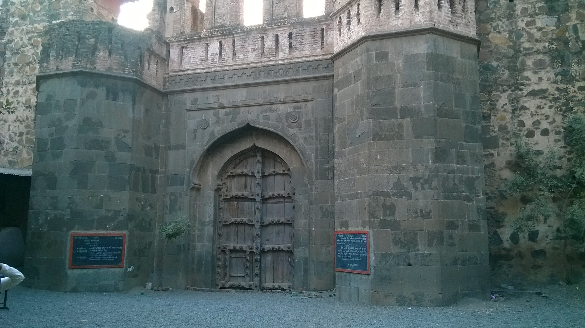
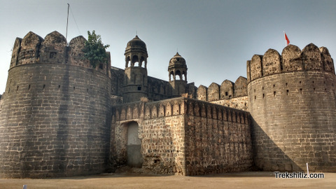
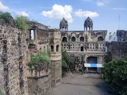

मालेगाव किल्ला
Location : Click Here For Google Map
- माहिती
- मालेगाव किल्ला महाराष्ट्र राज्यातील अहमदनगर जिल्ह्यात स्थित एक ऐतिहासिक किल्ला आहे. हा किल्ला मालेगाव शहराच्या आसपास वसलेला आहे. मालेगाव किल्ल्याचा इतिहास अत्यंत प्राचीन आहे, आणि याचे महत्त्व त्याच्या संरचनात्मक वैशिष्ट्यांमुळे वाढले आहे. किल्ल्याच्या बांधणीचे काम कधी आणि कोणत्या काळात झाले याबद्दल तंतोतंत माहिती नाही, पण किल्ल्याचे अवशेष पाहता, तो किल्ला मराठा काळात महत्त्वाचा असावा असा अनुमान आहे. किल्ल्याच्या भिंती, गेट्स आणि किल्ल्याच्या शिखरावरून संपूर्ण परिसराचे दृश्य पाहता येते.
किल्ल्याच्या परिसरात असलेल्या किल्ल्याच्या वास्तुशास्त्रात मराठा किल्ल्यांची छाप दिसते. किल्ल्याच्या आसपास असलेले गड आणि किल्ले एकमेकांशी जोडलेले होते आणि त्या काळातील संरक्षणात्मक पद्धतींचे उत्तम उदाहरण होते. मालेगाव किल्ला प्राचीन काळापासून एक महत्त्वाचे सामरिक स्थान राहिला आहे, ज्यामुळे त्याचे ऐतिहासिक आणि सांस्कृतिक महत्त्व आहे.
आजकाल, मालेगाव किल्ला पर्यटकांना आकर्षित करणारे एक महत्त्वाचे स्थळ बनले आहे. किल्ल्याच्या अवशेषांवरून त्याच्या इतिहासाची गोडी लावली जाते, आणि तो स्थानिक तसेच बाहेरून येणाऱ्या पर्यटकांसाठी एक महत्त्वाचे ऐतिहासिक ठिकाण आहे.
Explore the historical beauty


